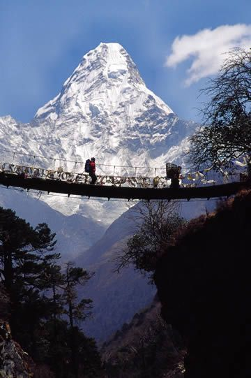
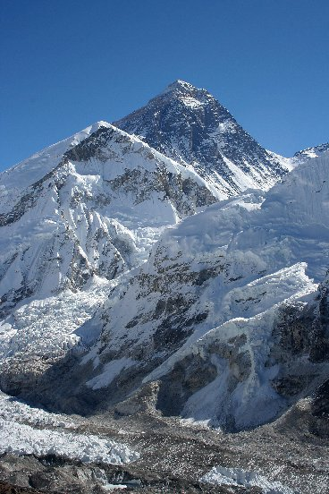

O monte everest, considerado o topo do Mundo, é a montanha mais alta do Planeta Terra formada há 60 milhões de anos.
O Everest possui 8.848 metros de altitude e está localizado na Ásia, na Cordilheira do Himalaia, entre o Tibete e o Nepal.
O nome da montanha está atribuído ao explorador inglês George Everest, antes chamada de Pico XV.
O Everest foi identificado como a montanha mais alta do mundo pelo matemático e topógrafo indiano Radhanath Sikdar, em 1852.
Desde então, o local é um dos mais ansiados pelos alpinistas, embora muitos deles não conseguiram atingir o cume da montanha, visto as tempestades de neve, ventos fortes, escassez de oxigênio, o que muitas vezes resultou na morte.
Para muitos povos, o Monte Everest é considerado sagrado, tal qual os chineses, sherpas, nepaleses, tibetanos, dentre outros povos.
Assim, na língua nepalesa, o monte recebeu o nome de Sagarmatha, que significa “rosto do céu”, enquanto que na língua tibetana, o nome “Qomolangma”, atribuído ao monte, significa “mãe do universo”.
Segundo estatísticas, até o ano de 2006, 8.030 pessoas tentaram alcançar o topo do Monte Everest, embora 212 não retornaram da escalada.
Para tanto, foi no ano de 1953 que o Monte Everest foi escalado pela primeira vez, pelos aventureiros e exploradores Edmund Hillary, alpinista neozelandês, e Tenzing Norgay, guia de montanhismo nepalês.
Eles atingiram o cume no Everest em 29 de maio de 1953. Essa expedição foi dirigida pelo oficial do exército britânico, John Hunt.
Um dos nomes destacados foi de Junko Tabei, a primeira mulher a escalar o Monte Everest atingindo seu cume em 16 de maio de 1975.
Além disso, a alpinista japonesa foi a primeira mulher a escalar os “Sete Cumes”, ou seja, as montanhas mais altas de cada continente do mundo.
No caso brasileiro, merece destaque os alpinistas Waldemar Niclevicz e Mozart Catão, os primeiros a atingir o cume do Everest, em 14 de maio de 1995.
Por outro lado, existem as histórias tristes sobre esse feito, onde um dos maiores desastres ocorreu em 1996 ocasionando a morte de 19 alpinistas que tentavam atingir o cume da montanha.